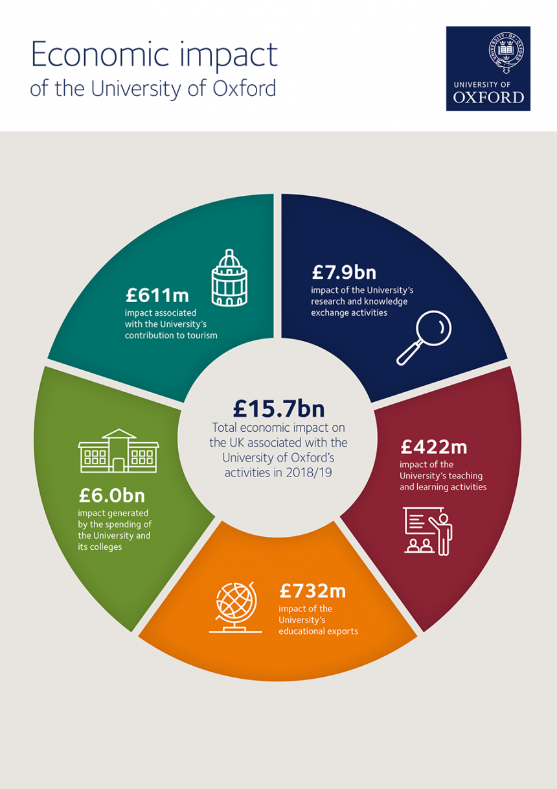

Oxford University's economic impact
The University of Oxford contributes around £15.7 billion to the UK economy, and supports more than 28,000 full time jobs.
A study carried out by London Economics – The Economic Impact of the University of Oxford – measured the University’s impact on the UK economy in 2018/19. It considers the impact of a range of University activities, including:
the University’s research and knowledge transfer activities (£7.9 billion)
the value of the University’s teaching and learning activities (£422 million)
the impact of the University’s educational exports (£732 million)
the impact generated by the spending of the University and its colleges (£6 billion)
the impact generated by the University’s contribution to tourism (£611 million)
The report found that every £1 invested in University of Oxford research and knowledge exchange activities generated £10.30 to the wider UK economy.
The total impact in regions outside the South East was over £4 billion (38%), with impacts in excess of £100 million occurring in each region outside of the South East.
“This report provides evidence for something long known around Oxford: the university drives the economy, both locally and nationally, as well as having a significant international presence. We provide jobs, attract investment and conduct globally recognized research that improves the lives of the people of Oxfordshire and of the United Kingdom. We are a global institution deeply rooted in a vibrant local community and can be an engine of the British economy into the future.”
